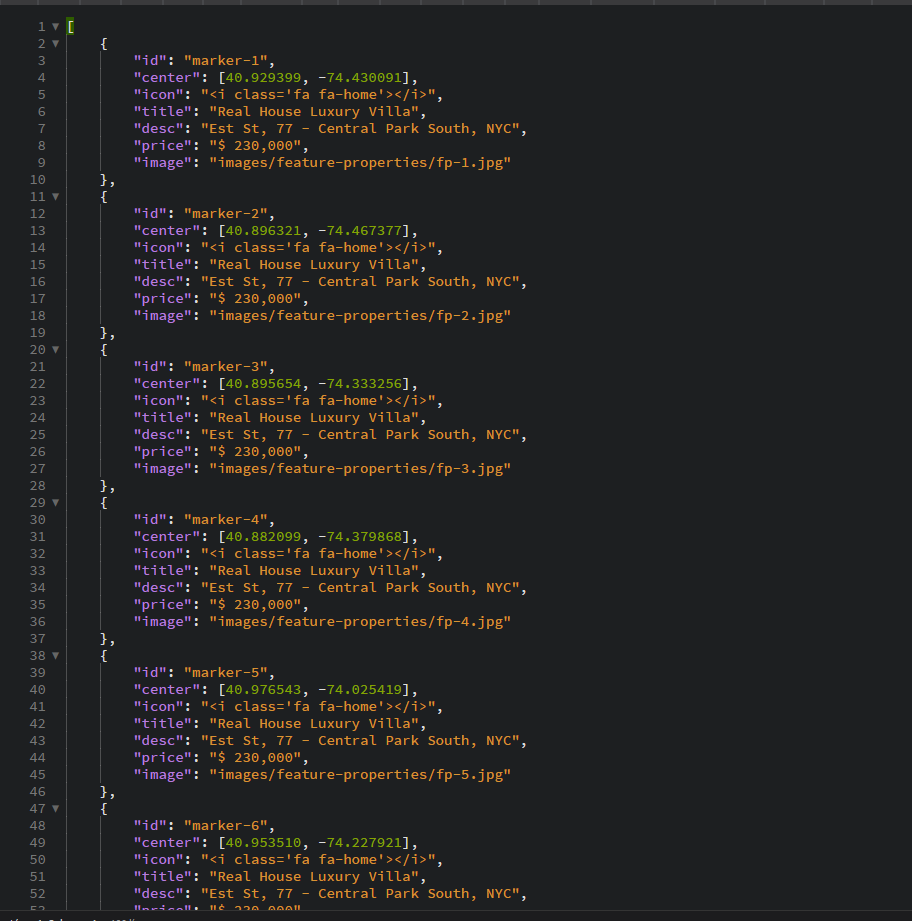
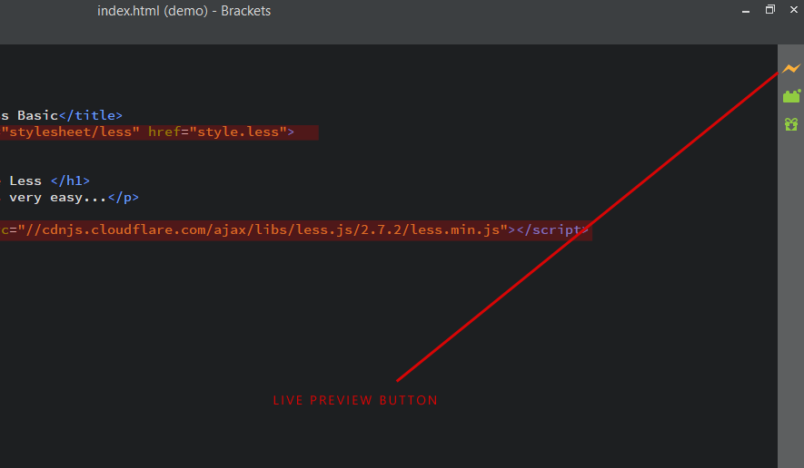
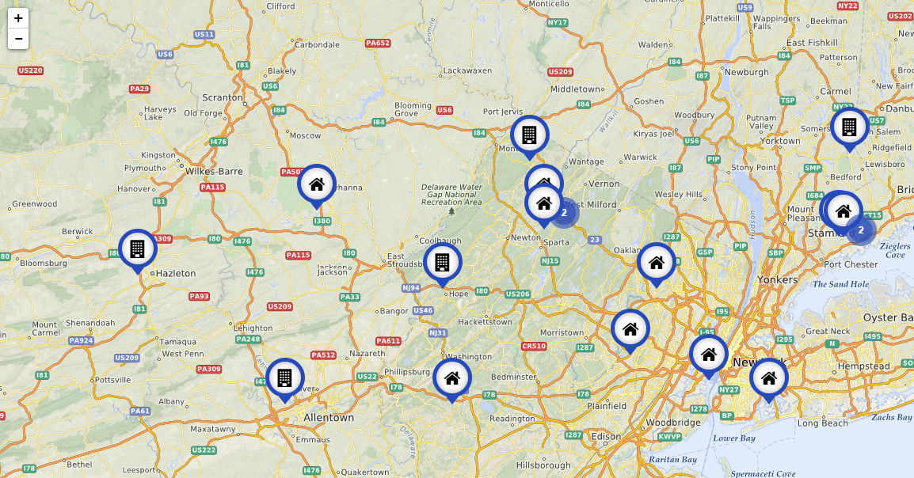

Intoduction
Find Houses - HTML5 Template
Find Houses - HTML5 Template
Created : 10/4/2018By : Code-Theme
Thank you for purchasing Find Houses - Find Houses - Template HTML5 Multi Pages. If you have any questions that are beyond the scope of this help file, please feel free to email, via my user page contact form or put a ticket at Support Center .
Thank you so much!
HTML Structure
The html template uses Latest Bootstrap 4 with valid HTML5 tags. This template is a responisve layout with 4 column Support column. All of the information in content area is nested within a class and comes with predefined classes.
Main building blocks of Container looks like in the photo

Map Markers Settings
We have added a modern map markers icons. To be able to edit it, you need to be on a server. Or you can use the editor brackets using the Live Preview Button.
You can find the file in: js/markers.json
Below are the photos of markers file, bracket editor and the map markers.



CSS Files and Structure
Mainly two main CSS files are used in this theme. The first one bootstrap.css, second one is style.css which for this template.
If you would like to edit a specific section of the site, simply find the appropriate label in the CSS file, and then scroll down until you find the appropriate style that needs to be edited.
Jquery and javascript
In folder js you will find 20 javascript files, but all adjustments are in just one file: "scripts.js".
All JavaScript files:
- jQuery - jquery.min.js - its the last version of jquery (v3.2.1)
- Bootstrap - bootstrap.min.js
- Forms - forms.js
- Gmap3 - gmap3.min.js
- Images Loaded - imagesloaded.pkgd.min.js
- inner - inner.js
- Isotope - isotope.pkgd.min.js
- Jquery CounterUp - jquery.counterup.min.js
- Jquery Form - jquery.form.s
- Jquery Validate - jquery.validate.min.js
- Jquery Waypoints - jquery.waypoints.min.js
- Lightcase - lightcase.js
- Map4 - map4.js
- OwlCarrousel - owl.carousel.min.js
- Port - port.js
- Require - require.js
- Script - scripts.js
- Smooth Scroll - smooth-scroll.min.js
- Tether - tether.min.js
Contact Form Settings
We have added an attractive and fully functional contact form. You need to update the recipient name and email address.
You can change recipient name and email address in: form/process-contact.php

Newsletter Form Settings
We have added an attractive and fully functional Newsletter form. You need to update your own mailchimp form post url inside the url.
You can change mailchimp form post url inside the url in: js/newsletter.js
Sources and Credits
We have used the following plugins, fonts & images. All fonts, images, icons used in this template are free for commercial use.
Fonts Used int the template are google fonts, you can find theme on Google Fonts API
Fonts Used are :
Lato
Montserrat
Icons Fonts Used:
Font Awesome
FlatIcon
Sliders Used Are :
Revelution Sliders
Owl Carousel
Google Map Used From :
developers.google.com/maps/
Images Used From :
pexels.com
unsplash.com
Every Code is properly commented for Editing Ease.
Support
Once again, thank you so much for purchasing this template. As I said at the beginning, I'd be glad to help you if you have any questions relating to this templatee. No guarantees, but I'll do my best to assist. If you have any queries, please feel free to contact us at Support Center.
Email Us at : code-theme